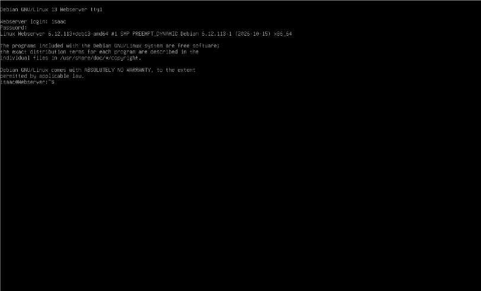

Description: In Debian, the firewall is managed with ufw (Uncomplicated Firewall). It controls which network traffic is allowed in or out of the system by turning the firewall on or off and adding or removing rules.
Formula/Syntax: sudo ufw + action + argument
sudo ufw is the command (run with admin rights)
action is what to do, such as status, enable, disable, or allow
argument is what the action applies to, such as an application profile like 'WWW Full'
Examples:
How do you check if the Firewall is running?
By using the command sudo ufw status, which shows whether the firewall is active or inactive and lists the rules. You can also use systemctl status ufw to check the ufw service.
How do you disable the Firewall?
By using the command sudo ufw disable, which turns the firewall off so no rules are enforced.
How do you add Apache to the Firewall?
By using the command sudo ufw allow 'WWW Full', which allows web traffic on ports 80 (HTTP) and 443 (HTTPS).
1. What is the command you use to check if Apache is running?
systemctl status apache2active (running) or inactive (dead), along with its most recent log lines.

2. What is the command you use to stop Apache?
sudo systemctl stop apache2
3. What is the command you use to restart Apache?
sudo systemctl restart apache2
4. What is the command used to test Apache configuration?
sudo apache2ctl configtestSyntax OK means the configuration is valid.

5. What is the command used to check the installed version of Apache?
sudo apache2 -v
6. What are some common configuration files for Apache?
ls /etc/apache2/apache2.conf (main configuration), ports.conf (ports Apache listens on), sites-available (virtual hosts), mods-available (modules) and conf-available (extra settings).

7. Where does Apache store logs?
sudo ls /var/log/apache2//var/log/apache2/. It contains access.log (requests to the server) and error.log (errors). sudo is needed because the folder is restricted.

8. What are some basic commands we can use to review logs?
sudo tail -f /var/log/apache2/access.logtail -f follows the log live, showing new entries as they are written.